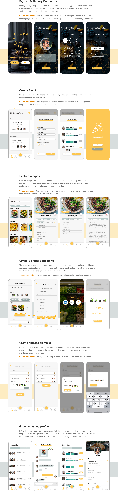

Cook Pal
A mobile app that helps college students creating meal-prep events, making meal-prep a fun and social activity
Project Type
Personal project
Role
It's a solo project that I researched, ideated and prototyped the entire user flow and interface
Duration
Fall 2018 (3 months)
Skills
Wireframing, Storyboard, Prototyping, Personas, Sketching, Competitive Analysis
Challenge
Food insecurity among college students
According to a research study, 36% of college students do not get enough to eat. 65% of college students said that sometimes they skipped meals.
How to make meal-prep accessible for busy college students?
People enjoy not only cooking but also social contact between people. However, gathering busy college students for a good cooking party and organize recipes and shopping lists is difficult even with existing social media services.
Design Overview
Cook Pal is a platform for users to create meal prep parties with their friends. This product aims to make meal prep fun and social activity so that they can support each other when preparing meals. By using this app, college students and other young adults can corporate together for meal prep and eat better.

1. Dietary Preference
During the sign-up process, users will be asked to set up allergy, the food they don’t like, following diet and their cooking skill levels. The dietary preference set up process is straightforward to avoid using feeling tiresome.
2. Explore recipes
The app can provide recipe recommendations based on users’ dietary preferences. The users can also search for recipes with keywords. Users can view the details of a recipe including cookware needed, integration and cooking instruction.

3. Create meal-prep party
Users can invite their friends to create a meal prep party. They can set up the event time, location, number of meals per person, etc.
4. Simplify grocery shopping
After a meal prep party is created, users can build a grocery shopping by just one click. In addition, users can link to online grocery shopping platforms and use the shopping list to buy groceries before the party, which will save a lot of time. Users can also split the cost using the app.

5. Create and assign tasks
Users can create tasks based on the given instruction of the recipes and they can assign tasks according to personal skills and interest. This feature allows users to organize their events in a more efficient way.
Design Process
Iterate for real needs
CookPal is a mobile app design of a semester-long solo project. I conducted the end-to-end research and design process, from conducting interviews to validating design decisions by testing with target users. My design evolved along with several rounds of iteration at different stages.
Research
Needfinding to frame the problem
Interview
After deciding my focused design approach, I conducted one-on-one interviews with 5 college students, including 3 graduate students and 2 undergraduate students who prepare their meals weekly. I asked them certain questions to identify their pain points. I have three key takeaways from these interviews.
Meal prep sometimes is overwhelming
Grocery shopping is time-consuming
It is tiring to have the same meal for a couple days
Personas
Understanding the users
I created Personas to represent a user group that faces a similar problem. This gave me a clear picture of the user’s expectations and how they would like to use a product.
Competitive Analysis
I took a careful look at existing solutions within my context and analyzed their pros and cons with respect to supporting my target activity. I analyzed multiple existing meal planning apps such as Mealime, MealPrepPro, Lifesum, and PlanToEat to explore insights.
What did I learn
1. Most apps focus on the diet goals of users rather than time-consuming and the cost.
2. Some platforms limit the recipe number per plan.
3. There are few social contacts on these apps.
4. The apps commonly have a cost associated with premium content.
5. It is important to document the users’ dietary preferences.
Ideation
Paper prototype
Design Change
Design Change 1
Stremline event creating process
Design Change 2
A more funtional event detail page
Flow Diagram
Mapping and organizing information
Wireframing
Determine interaction flow
UI Design
Final solution prototype
I started designing high-fidelity prototypes by creating a style guide for the user interface and finally designed the major screen of the app which is shown below.
CONCLUSION & REFLECTION
Learning from the users
In this project, I was challenged to set aside my own assumptions and quarrels with the platform and seek feedback from all types of users. This project provided the opportunity for me to learn the value of user research techniques like surveys and interviews to gain a deeper understanding of all users. With users participating along my design process, I have gained more comprehensive understanding of different factors surrounding the problem to reduce my design bias.
Next step - Collaborate with Maize & Blue Cupboard
I conducted user testing & cognitive walkthroughs to find out usability issues in the interface of the app. Most of the users found the application user-friendly and could easily navigate between the screens. There were some problems in the invitation process and creating a shopping list which I can improve by adding tutorials and tooltips in the onboarding process.
Besides, I visited the Maize & Blue Cupboard, a place that support students with free food and kitchen to cook. I shared my design with the program manager Jessica Thompson and she thought it was a good idea. We might work together in the future to build a product with the similar idea that will be used to support the program.

Maize & Blue Cupboard